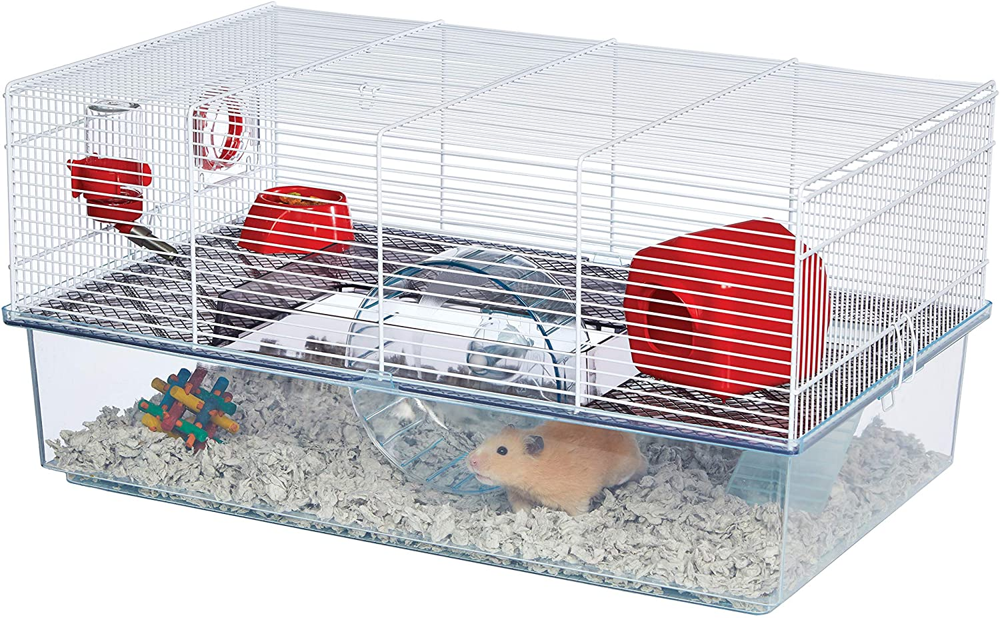
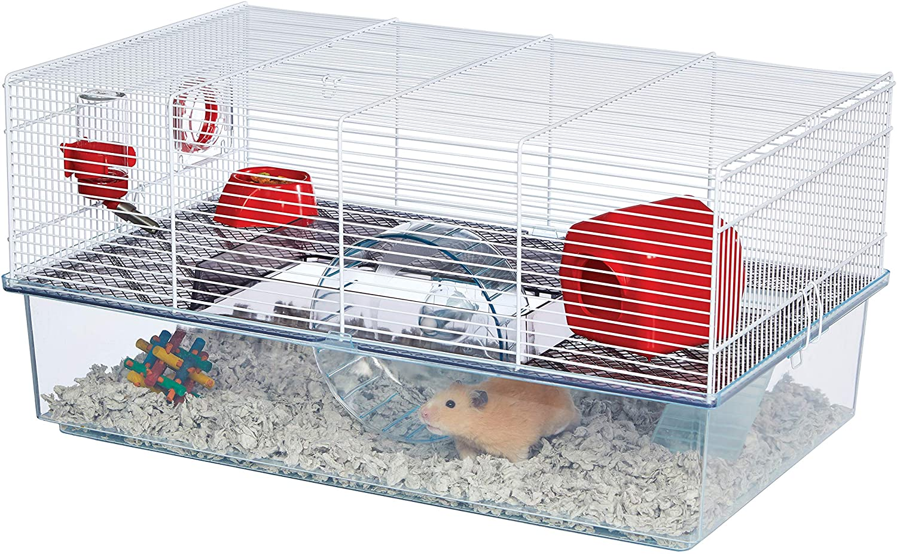

Though there are 5 different breeds of hamster, hamster care remains largely the same for all breeds. All hamster breeds need at a bare minimum, 450 sq inches of floorspace in their enclosure according to the California hamster association. That means many of the cages seen in pet stores, such as the hamster cage shaped like a dinosaur or the one shaped like a princess castle, or too small for a hamster to humanely live in. Not only are the cages too small for a hamster to humanely live inside of, it can also hinder your enjoyment of the hamster, as the cages often have many nooks and crannies that are difficult to clean. Plastic and wire based cages are also easy to escape from, and hamsters are notorious for getting out of enclosures and getting lost. A general rule of thumb is that if the hamster cage is sold in a US pet store and is marketed as a “hamster cage” it is actually too small and will not meet the bare minimum cage size recommendations.

 

It is difficult to find a hamster cage that is large enough and also available commercially, so hamster owners have to improvise and create their own custom cages. Hamster owners have made hamster cages out of large storage bins, such as the IKEA Samla, by cutting out ventilation panels in the top or sides. That’s not all that you can do with IKEA furniture and hamsters though, as a very popular hamster enclosure is made out of the IKEA detolf, a glass cabinet, that when laid on its side, is 900 sq inches of floor space for your hamster to roam through. There are also reptile and fish aquariums that are large enough to suit the bare minimum standard for hamsters, such as a 40 gallon breeder tank or larger. Once you have a large enough enclosure, your hamster will also need other essentials, such as safe bedding (either a paper based bedding or aspen - not pine - wood shavings), a running wheel (with a solid track with a diameter of 8 inches or larger), and toys.